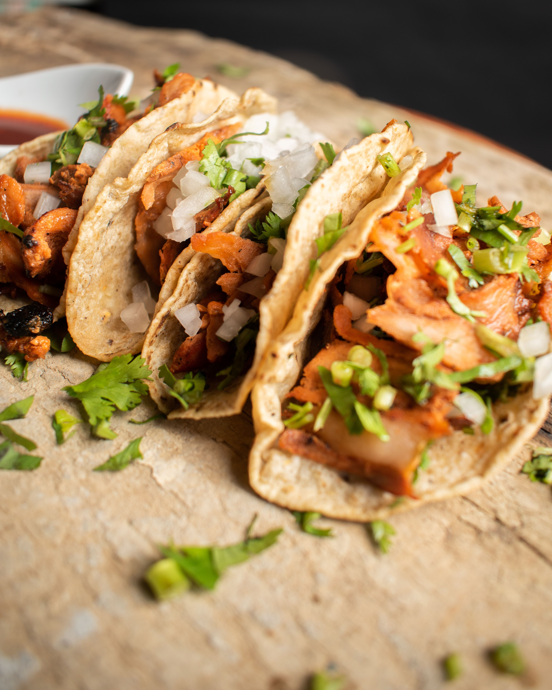

Taco mexicano

Descrição
O taco mexicano tradicional é feito com uma tortilha de milho crocante ou macia,
recheada com carne temperada e acompanhamentos frescos.
Ingredientes principais
- Massa (Tortilha):
- ½ xícara de chá de fubá (80g)
- ½ xícara de chá de farinha de trigo (60g)
- 2 pitadas de sal
- 1 colher de sopa de óleo ou azeite
- ½ xícara de chá de água
- Recheio de Carne:
- 250g de carne moída
- 1 colher de sopa de óleo
- 1 cebola média picada
- 3 dentes de alho picados
- 1 pimentão verde picado
- ¼ de colher de chá de sal
- ⅛ de colher de chá de pimenta calabresa (ou chilli)
- Montagem e Cobertura:
- 3 folhas de alface fatiadas
- 1 tomate pequeno picado
- Molhos opcionais (Guacamole, sour cream ou cheddar)
Modo de preparo
- Preparo da Massa:
- Em uma tigela, misture o fubá, a farinha de trigo e o sal.
- Adicione o óleo e a água aos poucos, amassando até formar uma massa homogênea
que não grude nas mãos.
- Cubra e deixe descansar por 30 minutos.
- Divida em pequenas porções, abra discos finos com um rolo e doure rapidamente dos dois lados
em uma frigideira quente. (Para deixar em formato de "concha"
crocante, você pode dobrá-los e assar ou fritar com cuidado).
- Preparo do Recheio:
- Aqueça o óleo em uma frigideira e refogue a cebola, o alho e o pimentão até murcharem.
- Adicione a carne moída e mexa bem até dourar e ficar soltinha.
- Tempere com o sal e a pimenta calabresa, cozinhando por mais alguns minutos até apurar os sabores.
- Montagem:
- Pegue a tortilha, adicione uma porção da carne moída refogada.
- Cubra com a alface fatiada e o tomate picado.
- Finalize com molhos de sua preferência, como guacamole ou creme azedo (sour cream).
Página inicial